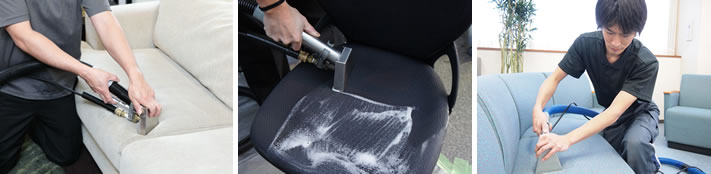
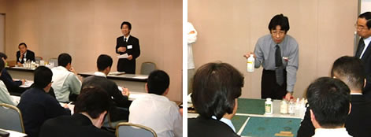
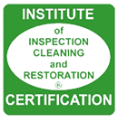

椅子ソファークリーニングの専門家として
椅子ソファークリーニングの専門家として

タックは椅子ソファークリーニングの専門家として30余年の実績を持っています。従来ビルメンテナンス業の一部の領域であったインテリアクリーニングに特化した業者としては非常に先駆的な存在です。
当初はこの新しい業務に関する情報もあまりなく、海外のノウハウを取り入れながら試行錯誤を繰り返し、最良のクリーニング方法を模索してまいりました。
その中で確立していったのが当社独自の「椅子クリーニングPLUS」です。従来の問題点の手法の問題点を解決し、他社で落ちなかった汚れも落とす事が出来るようになりました。今後も皆様のお役に立ち、幅広く評価をいただくため、熟練スタッフが日々誠意を込めてお仕事をさせていただいております。ぜひこの機会にタックのクリーニング技法をお試しください。きっとお客様のお役に立てるものと確信しております
IICRC認定会社
カーペットメンテナンスはを持った専門家に

タックはIICRCに認定されたプロのインテリアクリーニング会社。最高品質のサービスと、環境問題をはじめとする社会貢献をお約束します（写真はシミ抜き講習会での山本の講義風景）。
IICRCは、プロクリーナーとしての「知識の習得」「技術の訓練」を通して、業界レベルを向上させることを目的にアメリカで1972年に設立された非営利団体です。認定のプロセスや条件を厳しく管理することで、プロのテクニシャンから最高品質のサービスを提供するとともに、環境保護に関する高い規格と倫理を促進し、社会に貢献することでお客様から高い信頼を得ています。現在、世界13カ国（アメリカ・カナダ・オーストラリア・イギリス・ニュージーランド・日本・ポルトガルなど）3300社以上の企業で、2万7600人のテクニシャンがIICRCから認定を受け活躍しています